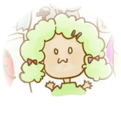
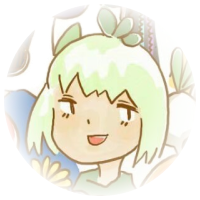
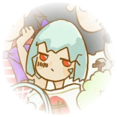
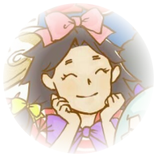
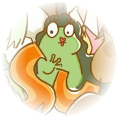
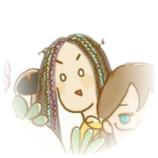
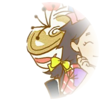
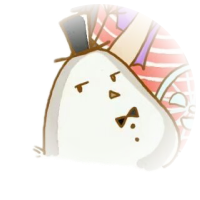

The partner whom Giant Goose rescued from a mining pit in the
mountains. Giant Goose believes Laifu is a raven, but the exact
species is unknown. Laifu was likely sold into the mine as a
“canary” to monitor gas levels, making him a victim of hazardous
working conditions. However, he lost his voice after a mining
accident damaged his throat.

花椰菜 Cauliflower｜Brassica oleracea var. botrytis L.
科属 Family and Genus：
十字花科 芸薹属 Brassicaceae (Mustard family), Brassica genus
A biennial herbaceous plant, growing to a height of 60-90 cm,
covered in a powdery bloom. The stem is upright, robust, and
branched. Basal and lower leaves are oblong to oval, 2-3.5 cm long,
gray-green, with a rounded, spreading, non-curled tip. Leaf margins
are either smooth or finely toothed, sometimes extending downward
with several small lobes forming a wing-like structure. Leaf stalks
are 2-3 cm long. The middle and upper stem leaves are smaller,
sessile, oblong to lanceolate, and clasp the stem. At the top of the
stem is a dense, creamy-white, fleshy head formed by a cluster of
flower buds and stems that have not fully developed. The
inflorescence is terminal and axillary, with pale yellow flowers
that eventually turn white. The siliques (seed pods) are
cylindrical, 3-4 cm long, with a central vein; the lower part of the
beak is thick, and the upper part is slender, measuring 10-12 mm.
Seeds are broad, oval, nearly 2 mm long, and brown.
备注 Remarks：
可食用；是西蓝花的亲戚（哗耶），熊孩子
Edible; a close relative of broccoli (“Wow Ye”), often seen as the
mischievous younger sibling.

巨鸭艮 Giant
红日二把手，本职工作应该包括下蛋和喂鸡；穴居夜行性动物，喜欢摸鱼和挖坑
The second-in-command of the Red Sun Production Team, Giant Goose’s
main duties likely include laying eggs and feeding the chickens. A
nocturnal, burrowing creature by nature, Giant Goose has a strong
fondness for “touching fish” (slacking off) and “digging pits”
(setting traps or creating problems).
西蓝花（翠花）Broccoli｜Brassica oleracea var. italica Plenck
Broccoli is an annual or biennial herbaceous plant. It has a
thickened main root base and a developed root system, with primary
roots spread mainly within the top 30 cm of the soil. The flower
stalks are smooth. The cotyledons are heart-shaped, while the true
leaves are green and ovate with a powdery coating. The stem leaves
are usually smaller and green. The flowers are yellow, with fleshy
pedicels forming the flower cluster.
Broccoli is edible and a close relative of cauliflower (“Huā
Yēcài”). Known by the nickname “The Flower of Red Sun,” Cuìhuā is
the proprietor of the local convenience store and was once a
caretaker at the Red Sun pig farm before it went bankrupt.

咸鸭蛋 Salted Duck Egg
红日发家产品，但后续一般使用鸡蛋加工制作
A foundational product of the Red Sun brand, salted duck eggs
initially contributed significantly to its success. However, in
later years, chicken eggs were often used as a substitute in
production.
社会王哥 Social Boss Brother (Society King)
Responsible for collecting protection fees for the Red Sun team and
managing the staff canteen. He bears a striking resemblance to Elder
Y (David), which once led to him mistakenly being taken into a
nursing home.
A flagship product of Red Sun (canned herring). Its true species is
unclear, adding to its mysterious appeal. Interestingly, when
released, it finds its way back, boosting repeat purchases. Wise
Fish is also the Red Sun team captain, with a primary role of
cultivating and harvesting parsnips.

微鸡分 Micro Chicken Fen
巨鸭艮的某不知名远房亲戚，光吃不干活；物种为红腹锦鸡
A distant, somewhat mysterious relative of Giant Goose. Known for
eating without contributing any work. The species is the Golden
Pheasant (Chrysolophus pictus), with its distinctive red belly.

蛙青 Frog
红日生产队的大反派，擅长蛙声一片，常在红日防风林外的高压线下蹲守，习性见静不见动
The main antagonist of the Red Sun Production Team. Known for his
skill in creating a cacophony of frog sounds. Often lurks outside
the Red Sun’s windbreak forest, beneath high-voltage power lines.
Has a habit of remaining motionless and silent, only making his
presence known occasionally through his sounds.

白菜 Chinese Cabbage
可食用；是养生堂堂主，主要负责护肤产品研发和睡眠调理
Edible; serves as the head of the Health Hall within the Red Sun
team, primarily responsible for developing skincare products and
sleep aids.

黑草 Black Grass
备注 Notes：
可食用，黑草烤肠是红日特色小吃，考试前吃一根讨一个好彩头；另有黑皮形态（白草）和战斗状态（秋衣侠）
Edible; known for its specialty snack, Black Grass Sausage, which is
traditionally eaten before exams for good luck. It also has a
black-skinned variant (White Grass) and a battle form (Autumn Shirt
Hero).

八千 Eight Thousand
红日与绿月生产合作社幕后资方，有40米大刀，贤鱼克星
The behind-the-scenes investor of the Red Sun and Green Moon
Production Cooperatives, known for wielding a 40-meter-long saber. A
formidable adversary to Wise Fish (贤鱼).